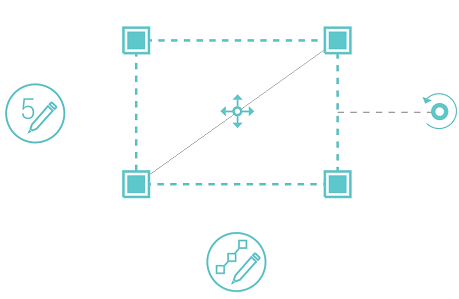
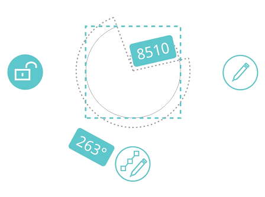
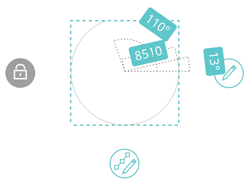

When a single object selected, the selected object is surrounded by a rectangle with four pinches at four corners; it displays Parameter switch on the left, Pinch switch on the bottom, Move icon in the center, and Rotate icon on the right.
1. Simple Edit:
Scale:
Press on one pinch and drag to scale selected object.
It displays scale value while dragging. After dragging, you could tap on value box to modify scales by popping
keypad.
Move:
Press on Move icon and drag to move the selected object.
It displays the distance between the original position and current location. After moving, you could tap on value
box to modify distance by popping keypad.
Rotate:
Press on Rotate icon and drag to change direction of selected object.
It displays rotation angle when rotating selected object. After rotating, you could tap on value box to modify
rotation angle by popping keypad.
2. Parameter Edit:
Tap “Parameter Edit” icon to enter parameter editing state. In parameter editing state, you could
change related parameters according to the selected object. Such as length or angle for a selected line; radius for
a selected circle.
The parameter editing about arc is necessary to note specially.
Select an existing arc, it displays “Center Unlocked” by default. The start point and endpoint of arc
are fixed. You could adjust the arc by modifying its radius and central angle.

Tap “Center Unlocked” icon and switch to “Center locked” state. The arc center is fixed. You could adjust the arc by modifying its radius, start angle, and end angle.

3. Pinch Edit
Tap to enter pinch editing state. You could stretch one of their pinches to change the shape of selected object.
4. Edit Menu
When objects selected, it displays editing menu and supplies the following related options: Edit Text(if text is selected), Edit Attribute(if a block with attribute is selected), Text Height, Delete, Copy, Move, Explode, New block, Add block(if a block is selected), Rotate, Mirror, Scale, Color, and Linetype.